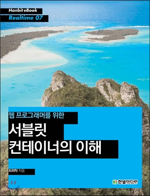

최 희탁 (Heetak Choi)
endofhope at naver.com
경력
- 2009 ~ 현재: NAVER corp. 책임리더
- 2002 ~ 2009: TmaxSoft co. 책임연구원
쓴 책
좋은 선택, 나쁜 선택. 합리적인 선택을 위한 데이터 바로 읽기 (한빛미디어 2019)

웹 프로그래머를 위한 서블릿 컨테이너의 이해 (한빛미디어 2012)
- github page 기반으로 재 구축하기 위해 static web site 생성기를 만들었고 그를 통해 재 구성된 endofhope.com
- Perl 로 작성된 여러 Utility module
- Volken::File - 두 개의 디렉토리를 비교하여 하위의 디렉토리와 파일의 sync 를 맞춰준다.
- Volken::Http, Https - HTTP, HTTPS client library
- Volken::Json - JSON Parser
- Volken::Mark - <ul>, <blockquote>, <pre>, <h> 정도의 간략한 문법을 지원하는 마크업 생성기
- Volken::ZN, QN - 정수, 유리수 지원 수 체계